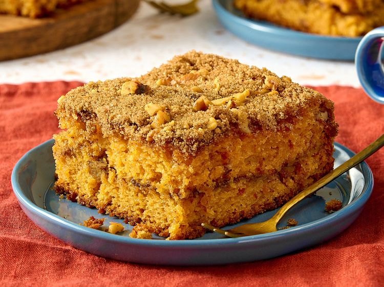

Cinnamon Coffee Cake Recipe
The kind of cake that turns coffee breaks into little rituals. ☕🍰

This cinnamon coffee cake is soft, buttery, and layered with a rich swirl of warm cinnamon sugar that melts into every bite. Topped with a crumbly, golden streusel, it offers the perfect balance of sweetness and spice, with a tender texture that pairs beautifully with a hot cup of coffee. Whether served as a comforting breakfast, an afternoon treat, or a simple dessert, this cake brings a bakery-style warmth to your kitchen. Each slice feels like a quiet moment—soft, fragrant, and just indulgent enough to make any day a little better.
Ingredients
- 1 (15.25-ounce) package yellow cake mix
- 1 (3.4-ounce) package instant vanilla pudding mix
- 1 (3.4-ounce) package instant butterscotch pudding mix
- 4 large eggs
- 1 cup water
- 1 cup vegetable oil
- 1 cup packed brown sugar
- 1 tablespoon ground cinnamon
- 1 cup chopped walnuts
Steps
- Preheat the oven to 350 degrees F (175 degrees C). Grease a 9x13-inch baking pan.
- Stir cake mix, vanilla pudding mix, and butterscotch pudding mix together in a medium bowl. Add eggs, oil, and water; mix until well blended.
- Stir brown sugar, cinnamon, and nuts together in a separate bowl. Pour half of the batter into the pan, spread evenly. Sprinkle with half of the nut mixture. Cover with remaining batter and sprinkle with remaining nut mixture.
- Bake in the preheated oven for 20 minutes, then turn the oven down to 325 degrees F (165 degrees C) and bake until a toothpick inserted into the center comes out clean, an additional 35 to 40 minutes.